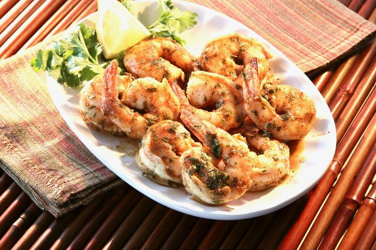

Spicy Baked Shrimp
Home

These spicy baked shrimp are made with a perfect blend of spices! So easy and quick to make!
Ingredients
- 1/2 cup of olive oil
- 2 tablespoons of cajun seasoning
- 2 tablespoons of lemon juice
- 2 tablespoons of chopped fresh parsley
- 1 tablespoon of honey
- 1 tablespoon of soy sauce
- 1 pinch of cayenne pepper
- 1 pound of uncooked shrimp, peeled and deveined
- cooking spray
Steps
- Whisk olive oil, Cajun seasoning, lemon juice, parsley, honey, soy sauce, and cayenne pepper together in a
large glass or ceramic bowl. Add shrimp; toss to evenly coat.
Cover the bowl with plastic wrap; marinate in the refrigerator for 1 hour.
- Preheat the oven to 450 degrees F (230 degrees C). Coat a baking dish with cooking spray.
- Transfer shrimp to the prepared baking dish; pour any remaining marinade over top.
- Bake in the preheated oven until shrimp are bright pink on the outside and meat is opaque, about 10 minutes.